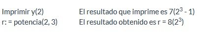

Ejemplo 2.9.1:
Función y(x: real): real
inicio
y: = x^3 - 1
retornar y
fin
Función potencia(a, b: entero): entero
inicio
potencia: = a^b
retornar potencia
fin
Una vez creadas las funciones, simplemente se les pasa el valor o valores por medio de los
parámetros que están entre paréntesis y de esa manera se obtiene el resultado.
Por ejemplo:

Algunos lenguajes usan la palabra "función" y otros no, pero a todas las funciones se les da un
nombre (en todos los casos anteriores es y y potencia), ya que el nombre de la función actúa como
variable en la cual se almacena el resultado de la función. Deben declararse los parámetros que
se encuentran dentro del paréntesis (x, a, b) como algún tipo de dato que maneje el lenguaje
(entero, real, cadena, carácter, flotante, etc.), así como el tipo de dato de la propia función.